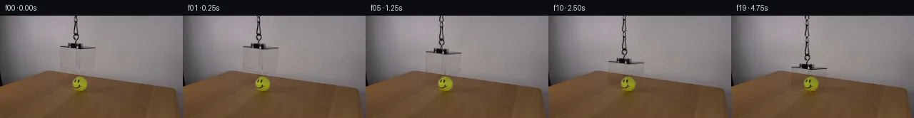

![首帧]()

Round 00
2026-11-05T10:01:08.215393+00:00像素候选变化代码 +178/−0inspection 更新
pixels ea3896206ba82965 · code 0f53e880e8334fd3
查看本轮 generate.py 真实 diff
--- previous/generate.py
+++ current/generate.py
@@ -0,0 +1,178 @@
+"""Deterministic local pixel continuation; no external assets or models."""
+from pathlib import Path
+import json
+import numpy as np
+from PIL import Image, ImageDraw
+from scipy.ndimage import gaussian_filter, map_coordinates
+import artifact_io
+
+ROOT = Path(__file__).resolve().parent
+W, H = 256, 144
+OFFSETS = np.array([0,.35,1.30,2.85,4.95,7.45,10.20,13.10,16.,18.75,21.20,23.35,25.15,26.60,27.65,28.35,28.80,29.,29.,29.])
+Y, X = np.mgrid[:H,:W].astype(float)
+
+def poly_mask(points, scale=4):
+ m=Image.new('L',(W*scale,H*scale),0)
+ ImageDraw.Draw(m).polygon([(round(x*scale),round(y*scale)) for x,y in points], fill=255)
+ return np.asarray(m.resize((W,H),Image.Resampling.LANCZOS),dtype=float)/255
+
+def translate(a, dy):
+ coords=np.array([Y-dy,X])
+ if a.ndim==2:
+ return map_coordinates(a,coords,order=1,mode='constant',cval=0,prefilter=False)
+ return np.stack([map_coordinates(a[:,:,c],coords,order=1,mode='constant',cval=0,prefilter=False) for c in range(a.shape[2])],axis=2)
+
+def wall_plate(src):
+ # Fit horizontal cubic curves to wall samples on both sides of the cover.
+ # This retains the measured curved wall illumination, rather than moving it.
+ fit_x=np.r_[np.arange(53,81),np.arange(138,175)]
+ xx=(fit_x-112.)/50.
+ basis=np.stack([xx**i for i in range(4)],axis=1)
+ coeff=np.empty((H,4,3))
+ for y in range(H):
+ sample=src[min(y,76),fit_x]
+ # For rows close to the table, use the unobscured wall level just above it.
+ if y>72:
+ sample=src[72,fit_x] + (y-72)*np.array([-1.55,-1.45,-1.35])
+ coeff[y]=np.linalg.lstsq(basis,sample,rcond=None)[0]
+ coeff=gaussian_filter(coeff,sigma=(1.0,0,0))
+ bx=(X-112.)/50.
+ plate=np.einsum('yic,yxi->yxc',coeff,np.stack([bx**i for i in range(4)],axis=-1))
+ return np.clip(plate,0,255)
+
+def build_layers(src):
+ wall=wall_plate(src)
+ # Measured six-sided projected silhouette, with half-pixel edge coverage.
+ mask=poly_mask([(82.6,42.0),(95.0,37.1),(114.5,38.2),(135.4,43.5),
+ (133.4,76.8),(110.8,83.1),(83.1,76.0)])
+ # The narrow suspension strand is reconstructed against row-interpolated wall.
+ cord_mask=((Y<38)&(X>=99)&(X<=112)).astype(float)
+ cord_bg=src.copy()
+ for y in range(38):
+ left=src[y,96:99].mean(0)
+ right=src[y,113:116].mean(0)
+ for x in range(99,113):
+ u=(x-97)/17
+ cord_bg[y,x]=left*(1-u)+right*u
+ # Remove the cover from its original position. Outside its silhouette all
+ # source pixels are untouched. The table and ball stay in the clean plate.
+ clean=src*(1-mask[:,:,None])+wall*mask[:,:,None]
+ clean[:38,99:113]=cord_bg[:38,99:113]
+ bg=wall
+ diff=src-bg
+ # Photometric decomposition C = T * background + reflected light.
+ # Low-contrast gray face pixels yield T close to one. Dark rim and attachment
+ # pixels yield low T. RGB residuals preserve original warm and cool highlights.
+ t=np.clip(src.mean(2)/np.maximum(bg.mean(2),1),0.015,1.)
+ attenuation=(1-t)*mask
+ residual=(src-t[:,:,None]*bg)*mask[:,:,None]
+ # Cord uses its own unobstructed background and the same decomposition.
+ ct=np.clip(src.mean(2)/np.maximum(cord_bg.mean(2),1),0.005,1.)
+ ca=(1-ct)*cord_mask
+ cr=(src-ct[:,:,None]*cord_bg)*cord_mask[:,:,None]
+ ca[:38,:][ca[:38,:]<.018]=0
+ cr*= (ca>0)[:,:,None]
+ return clean,attenuation,residual,ca,cr,mask
+
+def cord_layer(ca,cr,dy):
+ # Feed the photographed rope downwards. Newly exposed rope at the upper
+ # boundary repeats a 24-pixel photographed twist; no end is visible.
+ sy=Y-dy
+ sy=np.where(sy<0,np.mod(sy,24),sy)
+ coords=np.array([sy,X])
+ a=map_coordinates(ca,coords,order=1,mode='constant',cval=0,prefilter=False)
+ r=np.stack([map_coordinates(cr[:,:,c],coords,order=1,mode='constant',cval=0,prefilter=False) for c in range(3)],2)
+ return a,r
+
+def segment_distance(x0,y0,x1,y1):
… diff truncated; 91 more lines …